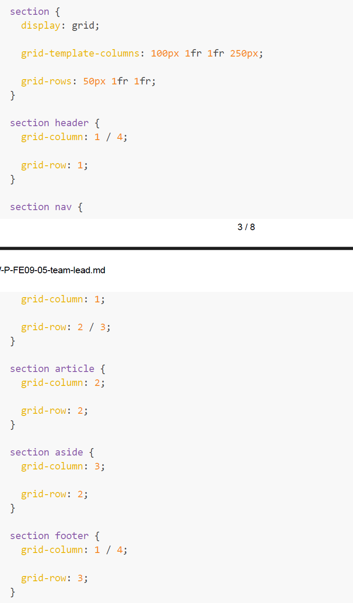

1. What do media queries allow us to do?
A. Stream video on our site.
B. Use different CSS based on screen size.
C. Do responsive design.
D. Changes all document sizes and feature.
2. Which of the following is most suitable for a grid
layout?
A. toolbar
B. menu
C. complex layout, like a newspaper
D. form
3. Which model defines structures similar to tables using 2
dimensions?
A. CSS Box model
B. CSS3 Grid Layout model
C. CSS3 Flexbox Box model
D. CSS float
4. You are creating a grid layout. What does 1fr mean in the
following code?
A. The first two columns will be two fraction units of the stated
width.
B. The third and fourth columns is 1 fraction unit of the remaining
space in the grid.
C. The second column will be double the stated width.
D. The second column will be half of the remaining space in the grid.
5. What layout modules require containers? (select all that
apply)
A. CSS Box model
B. CSS3 Grid Layout model
C. CSS3 Flexbox Box model
D. CSS float
6. How many columns and rows are defined in the following
code?

A. 1 rows and 2 columns
B. 2 rows and 3 columns
C. 3 rows and 2 columns
D. 3 rows and 4 columns
7. flex-wrap allows you to do what?
A. Define how elements will wrap when the browser width is changed
B. Define the direction of how elements are positioned based on either
row or column
C. Define how to position elements vertically
D. Defines how position elements horizontally
8. To use flexbox we define a container as a flexbox. What is the
CSS to do this?
A. position:absolute;
B. float:left;
C. display:block;
D. display:flex;
9. How can you make all items in a flex container have equal
widths?
A. 'flex-start:1' on each flex item
B. 'flex-direction: 1' on each flex item
C. 'flex: 1' on container item
D. 'flex: 1' on each flex item.
10. How do you ensure that an element aligns itself with other elements along its cross axis?
A. space-between
B. aling-items
C. align-self
D. justify
11. What are the different types of media properties in CSS?
A. Print
B. Screen
C. Speech
D. All of above
12. ___________ sets the style rule to different media types.
A. @extend
B. @import
C. @debug
D. @media
13. Which of the following directive is used to share rules and relationships between selectors?
A. @extend
D. @media
C. @at-root
D. None of the above
14. To use flexbox we define a container as a flexbox. What is the CSS to do this?
A. position:absolute;
B. float:left;
C. display:flex;
D. display:block;
15. flex-direction allows you to do what?
A. define the direction of how elements are positioned based on either row or column
B. define how elements will wrap when the browser width is changed
C. define how to position elements vertically
D. defines how position elements horizontally;
16. The css property "order" for flex items allows you to
A. specify at what time flex items appear
B. specify in what order the flex items appear
C. specify in what direction the flex items appear
D. none of the above
17. flex-direction is applied to a flex element not the whole flex box
A.True
B.False